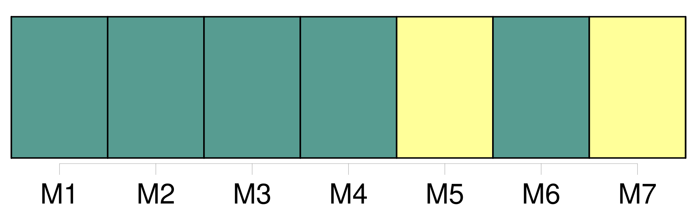
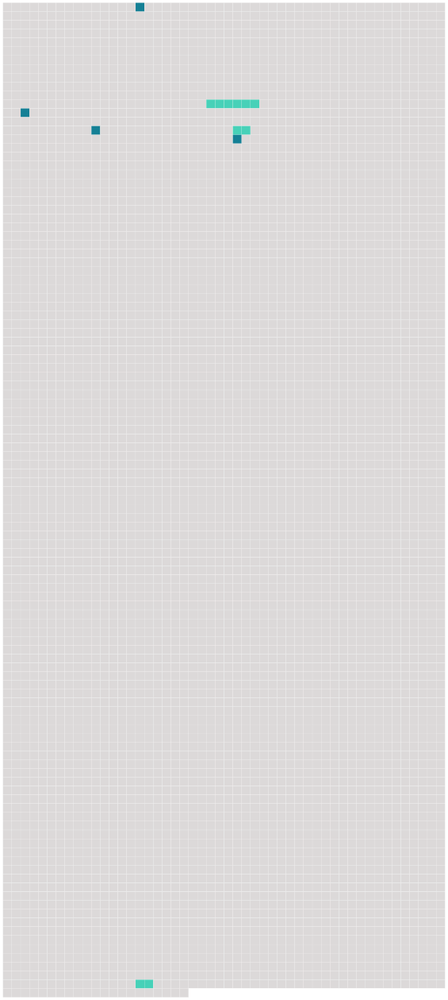

Longueur nb maillons : 7 mentions |
  |
L'enfant, à tout âge, doit honneur et respect à ses père et [mère] [27 phrases]
Les articles 376, 377, 378 et 379 seront communs aux pères et [mères des enfans naturels légalement reconnus] [1 phrases]
Le père durant le mariage, et, après la dissolution du mariage, le survivant des père et [mère] , auront la jouissance des biens de leurs enfans jusqu'à l'âge de dix-huit ans accomplis, ou jusqu'à l'émancipation qui pourrait avoir lieu avant l'âge de dix-huit ans. [7 phrases]
Cette jouissance n'aura pas lieu au profit de celui des père et [mère] contre lequel le divorce aurait été prononcé ; et elle cessera à l'égard de [la mère] dans le cas d'un second mariage. [1 phrases]
Elle ne s'étendra pas aux biens que les enfans pourront acquérir par un travail et une industrie séparés, ni à ceux qui leur seront donnés ou légués sous la condition expresse que les père et [mère] n'en jouiront pas. [240 phrases]
Tout tuteur, autre que le père et [la mère] , peut être tenu, même durant la tutelle, de remettre au subrogé tuteur des états de situation de sa gestion, aux époques que le conseil de famille aurait jugé à propos de fixer, sans néanmoins que le tuteur puisse être astreint à en fournir plus d'un chaque année. |
 |
La ressource peut être téléchargée sur la page Ortolang
Si vous avez des questions ou vous voyez des erreurs, merci d'envoyer un mail à silvia.federzoni89@gmail.com
Site développé par S. Federzoni (contact)